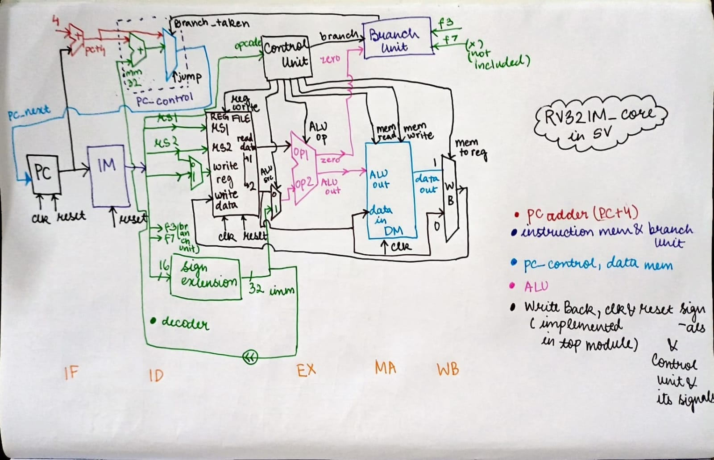
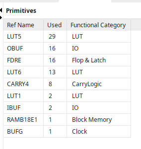
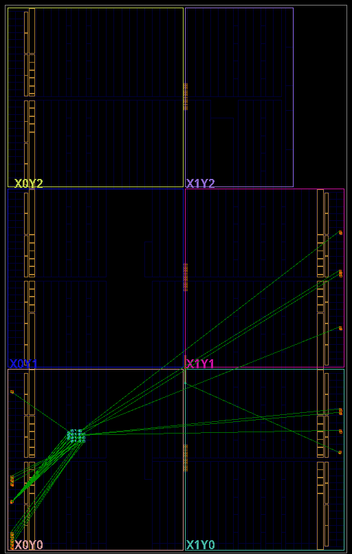
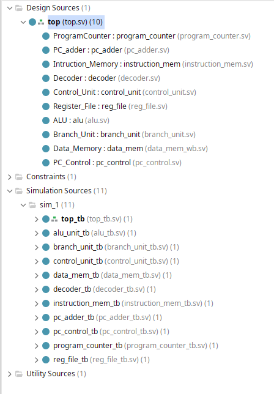
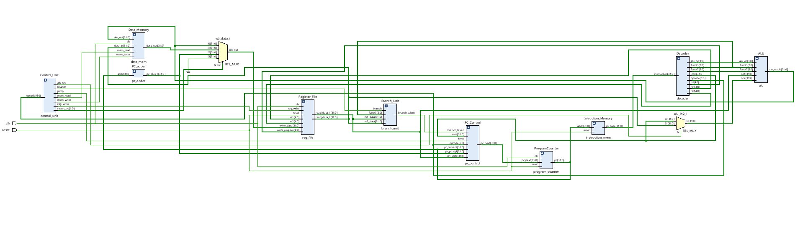
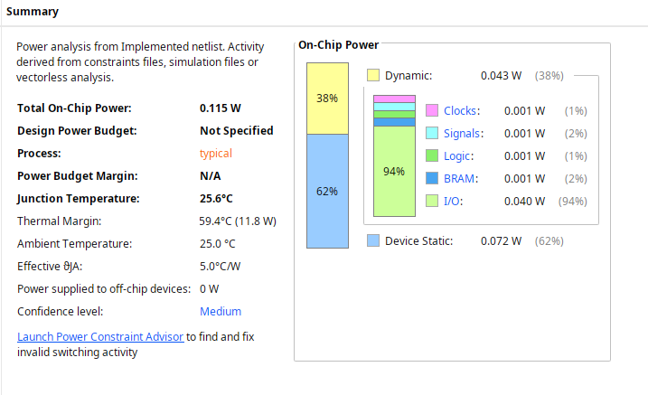

/rv32im-core
January 2026 | SystemVerilog, RISC-V, Digital Design | 12 min read
Introduction
This is a single-cycle RISC-V processor core supporting the RV32I base integer instruction set plus the M extension (integer multiplication and division). Every instruction completes in exactly one clock cycle. There's no pipelining, no caching, no branch prediction—just a straightforward implementation of the RISC-V specification.
The entire design is ~500 lines of SystemVerilog across 11 modules. It synthesizes cleanly on real FPGA hardware and runs a simple test program that counts up on LEDs.
Architecture
The core follows the classic five-stage conceptual model (Fetch, Decode, Execute, Memory, Write-back), but executes everything combinationally in a single clock cycle. The datapath looks like this:
Complete datapath showing instruction fetch, decode, execution, memory access, and write-back in one cycle.
Component Breakdown
Program Counter (PC): Holds the address of the current instruction. Updates on every clock edge based on whether we're branching, jumping, or just advancing to PC+4.
Instruction Memory: 1KB RAM storing 256 instructions. Synthesizes as Block RAM on FPGA. Currently hardcoded with a test program that increments register x1 in a loop.
Decoder: Extracts instruction fields (opcode, registers, immediates, function codes) and determines what operation to perform. Handles all six RISC-V instruction formats (R, I, S, B, U, J).
Control Unit: Generates control signals based on opcode. Decides whether to write registers, access memory, select ALU inputs, take branches, or handle jumps.
Register File: 32 general-purpose registers (x0-x31) where x0 is hardwired to zero. Two read ports for source operands, one write port for results. Built from flip-flops, not RAM.
ALU: Arithmetic Logic Unit performing 16 different operations including ADD, SUB, AND, OR, XOR, shifts, comparisons, and all M-extension operations (MUL, MULH, MULHU, MULHSU, DIV, DIVU, REM, REMU). The multipliers map to DSP48 blocks on the FPGA.
Branch Unit: Separate comparator for branch decisions (BEQ, BNE, BLT, BGE, BLTU, BGEU). Compares register values and signals whether to take the branch.
Data Memory: 1KB RAM for load/store instructions. Word-addressed (ignores bottom 2 bits). Currently used for storing intermediate computation results.
PC Control: Multiplexer selecting next PC value. Priority order: JALR target → JAL target → Branch target → PC+4.
Instruction Set Coverage
The core implements 47 instructions across multiple categories:
| Category | Instructions | Count |
|---|---|---|
| Arithmetic (R-type) | ADD, SUB, SLL, SLT, SLTU, XOR, SRL, SRA, OR, AND | 10 |
| Arithmetic (I-type) | ADDI, SLTI, SLTIU, XORI, ORI, ANDI, SLLI, SRLI, SRAI | 9 |
| Load | LB, LH, LW, LBU, LHU | 5 |
| Store | SB, SH, SW | 3 |
| Branch | BEQ, BNE, BLT, BGE, BLTU, BGEU | 6 |
| Jump | JAL, JALR | 2 |
| Upper Immediate | LUI, AUIPC | 2 |
| M Extension | MUL, MULH, MULHSU, MULHU, DIV, DIVU, REM, REMU | 8 |
Key Design Decisions
Why Single-Cycle?
Single-cycle designs are inefficient—every instruction must complete in the time it takes for the slowest instruction (usually a load from memory). But they're conceptually simple. There are no pipeline hazards, no forwarding logic, no stall conditions to debug. The entire processor state updates atomically on every clock edge.
For learning processor architecture, single-cycle is perfect. Once you understand this, pipelining is just an optimization.
Immediate Encoding Complexity
RISC-V immediate values are scattered across the instruction word in non-intuitive positions. The decoder needs to extract and sign-extend them correctly:
- I-type: imm[11:0] = inst[31:20]
- S-type: imm[11:0] = {inst[31:25], inst[11:7]}
- B-type: imm[12:1] = {inst[31], inst[7], inst[30:25], inst[11:8]}
- U-type: imm[31:12] = inst[31:12]
- J-type: imm[20:1] = {inst[31], inst[19:12], inst[20], inst[30:21]}
Getting these bit positions wrong leads to subtle bugs where instructions execute but compute wrong addresses or offsets. I spent hours debugging a JAL instruction that was jumping to the wrong location because bit 20 was in the wrong position.
M Extension Implementation
The M extension adds 8 multiplication and division instructions. Naive software implementations would take dozens of cycles. The FPGA has dedicated DSP48E1 blocks that can multiply 18×25 bits in a single cycle.
Vivado automatically infers DSP blocks when it sees multiplication operators. The synthesis report shows 12 DSP blocks used—multiple instances because 32×32 multiplication requires cascading multiple DSPs together.
DSP Report: Generating DSP alu_result0, operation Mode is: A*B.
DSP Report: operator alu_result0 is absorbed into DSP alu_result0.
DSP Report: Generating DSP alu_result0, operation Mode is: (PCIN>>17)+A*B.
...
Division is trickier. SystemVerilog's / and % operators synthesize to sequential logic that takes multiple cycles. For a single-cycle design, this means division instructions have a long critical path. In a real implementation, you'd either pipeline division or trap to software.
Register x0 Hardwiring
RISC-V specifies that register x0 always reads as zero and writes to it are discarded. The register file enforces this:
always @(posedge clk) begin
if (reg_write == 1'b1 && write_register != 5'b0) begin
Registers[write_register] <= write_data;
end
end
The condition write_register != 5'b0 prevents writes to x0. Reading x0 naturally returns zero because it's never written.
Synthesis Results
Xilinx Artix-7 (xc7a35tcpg236-1)
Target Board: Basys 3
Synthesis Time: 35 seconds
Resource Utilization:
- LUTs: 44 (< 1%)
- Flip-flops: 16 (< 1%)
- BRAM (RAMB18E1): 1 (1%)
- DSP48E1 blocks: 12 (13%)
- Total design size: 2.3 MB
Resource utilization on Xilinx Artix-7 FPGA
Why So Small?
Most of the "design" is actually memory arrays. The instruction memory (1KB) and data memory (1KB) synthesize to Block RAM. The register file (32×32-bit registers) becomes distributed RAM built from LUTs. The actual control logic—the ALU, decoders, muxes—is tiny.
The 12 DSP blocks handle all multiplication/division operations. Each DSP48E1 can perform 25×18 multiply-accumulate operations. Cascading multiple DSPs gives you wider multipliers.
Synthesis primitives showing DSP and BRAM inference
Critical Path Analysis
The longest combinational path determines maximum clock frequency. In this design, it's probably:
- PC register output
- Instruction memory read
- Instruction decode
- Register file read
- ALU computation (especially division)
- Data memory access
- Write-back mux
- Register file write
A timing report would show exactly where the bottleneck is. For learning purposes, I didn't optimize for speed—clarity matters more than MHz.

Timing analysis showing critical path
Physical Implementation
Physical placement on Artix-7 FPGA showing DSP and BRAM locations
Design module hierarchy
RTL schematic view of the processor datapath
Power consumption breakdown by component
Testing and Verification
The current test program is minimal:
immem_block[0] = 32'h00100093; // addi x1, x0, 1 (x1 = 1)
immem_block[1] = 32'h00108093; // addi x1, x1, 1 (x1 = x1 + 1)
immem_block[2] = 32'hFFDFF06F; // jal x0, -4 (jump back to addr 4)This increments register x1 in an infinite loop. The PC output drives the lower 16 LEDs on the Basys 3 board, so you see the counter incrementing if it's working.
What Real Verification Looks Like
A production processor would need thousands of directed tests plus constrained-random generation to hit corner cases. The RISC-V compliance test suite exists for exactly this purpose. Each instruction needs tests for:
- Normal operation with typical operands
- Edge cases (zero, negative, overflow)
- Register dependencies (x0 as source/destination)
- Memory alignment (for loads/stores)
- Branch taken/not-taken paths
- Immediate encoding correctness
I built a separate testbench for this core (see my PicoRV32 verification project), but the synthesis success itself is a good sanity check—at least the RTL is structurally sound.
What I Learned
Instruction encoding is more complex than it looks. RISC-V's immediate packing scheme seems arbitrary until you realize it's optimized for decoder simplicity. Critical bits share positions across instruction formats.
Hardware multiplication is cheap. Modern FPGAs have dedicated multipliers. Using them is essentially free compared to LUTs. Don't avoid multiplication in hardware—embrace it.
Single-cycle designs waste time. When an ADD instruction completes in 2ns but a LOAD takes 10ns, you're wasting 8ns on every ADD. Pipelining amortizes this cost. But for learning? Single-cycle is perfect.
Synthesis tools are smart. Vivado automatically inferred Block RAM for memories, DSP blocks for multipliers, and optimized away unused logic. You write behavioral SystemVerilog, the tools figure out the hardware mapping.
Debugging is iterative. The first synthesis run had critical warnings about internal drivers on clock and reset signals. The second run had uninitialized instruction memory. The third run succeeded. Each error teaches you something about what the tools expect.
Limitations and Future Work
Current Limitations
- No pipelining → Low clock frequency
- No caching → Every memory access is slow
- No exceptions/interrupts → Can't handle errors
- No system instructions (ECALL, EBREAK, CSRs)
- Minimal test coverage → Bugs likely exist
- Fixed memory sizes → Can't run real programs
Possible Improvements
- 5-stage pipeline: Fetch, Decode, Execute, Memory, Write-back in separate stages
- Hazard detection: Handle data dependencies between instructions
- Branch prediction: Reduce branch penalty
- Cache integration: I-cache and D-cache for performance
- Exception handling: Trap on illegal instructions, memory faults
- CSR support: Control and Status Registers for system management
- UART integration: Serial I/O for actual program loading
- Compliance testing: Run official RISC-V test suite
Running It Yourself
The complete source is on GitHub. You'll need:
- Xilinx Vivado (free WebPACK edition works)
- Basys 3 board (or any Artix-7 FPGA)
- Constraints file (XDC) for your board
Clone the repo, open the project in Vivado, synthesize, implement, generate bitstream, and program the FPGA. You should see the LEDs counting up as the test program runs.
Reflections
Building a CPU from scratch is one of those projects that sounds impossible until you actually do it. The RISC-V ISA specification is only 145 pages. The instruction formats fit on one page. The control logic for a single-cycle implementation is straightforward.
What makes it challenging isn't conceptual complexity—it's attention to detail. Getting immediate encodings right. Handling x0 correctly. Making sure branch targets compute properly. Synthesizing cleanly without warnings.
But once it works—once you program the FPGA and see those LEDs increment because your handwritten SystemVerilog is executing RISC-V instructions on real hardware—the effort is worth it.
Processors aren't magic. They're just state machines with carefully designed control flow. If you understand digital logic and read the ISA spec, you can build one.
Source code: github.com/yourusername/rv32im-core
References:
- RISC-V ISA Specification v2.2
- Computer Organization and Design: RISC-V Edition (Patterson & Hennessy)
- Xilinx 7 Series FPGAs Data Sheet (DS180)